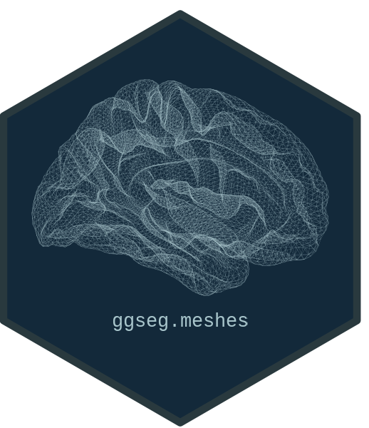

ggseg.meshes: Additional Brain Surface Meshes for the 'ggsegverse' Ecosystem
Source:R/ggseg.meshes-package.R
ggseg.meshes-package.RdProvides additional brain surface meshes for cortical and cerebellar visualisation in the 'ggsegverse' ecosystem. Cortical surfaces include pial, white, midthickness, semi-inflated, sphere, smoothwm, and orig at fsaverage5 resolution. Cerebellar surfaces include the Spatially Unbiased Infratentorial Template (SUIT) flatmap. All meshes follow the same vertices/faces data frame format used by 'ggseg.formats' and 'ggseg3d'.
Author
Maintainer: Athanasia Mo Mowinckel a.m.mowinckel@psykologi.uio.no (ORCID)
Other contributors:
Center for Lifespan Changes in Brain and Cognition (LCBC), University of Oslo [copyright holder]